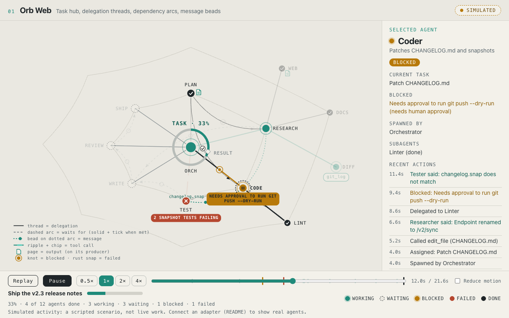
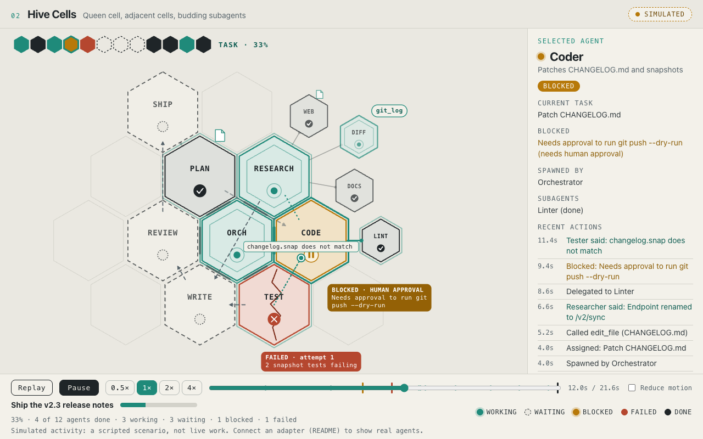
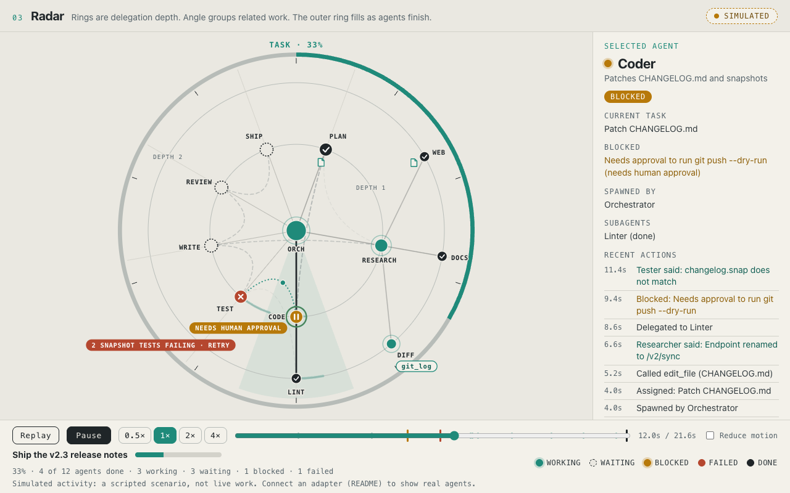
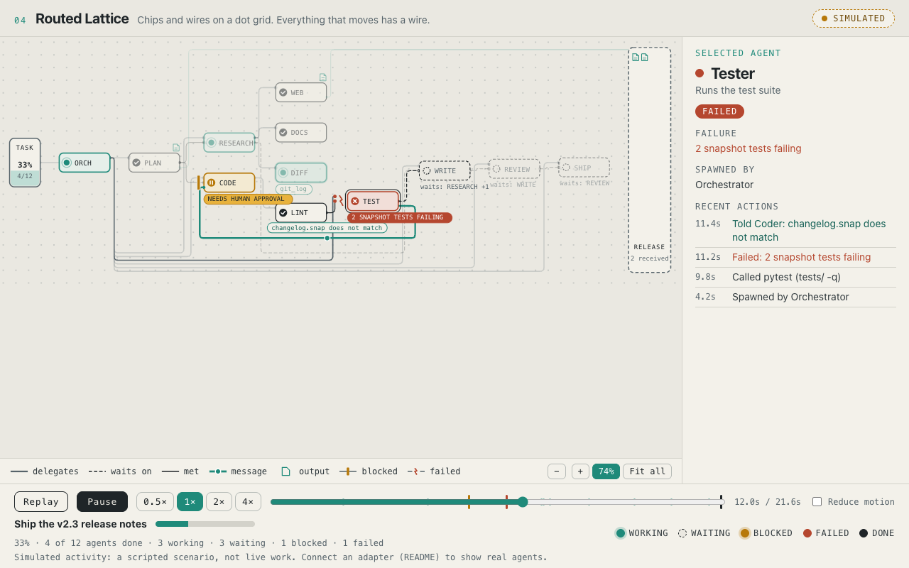
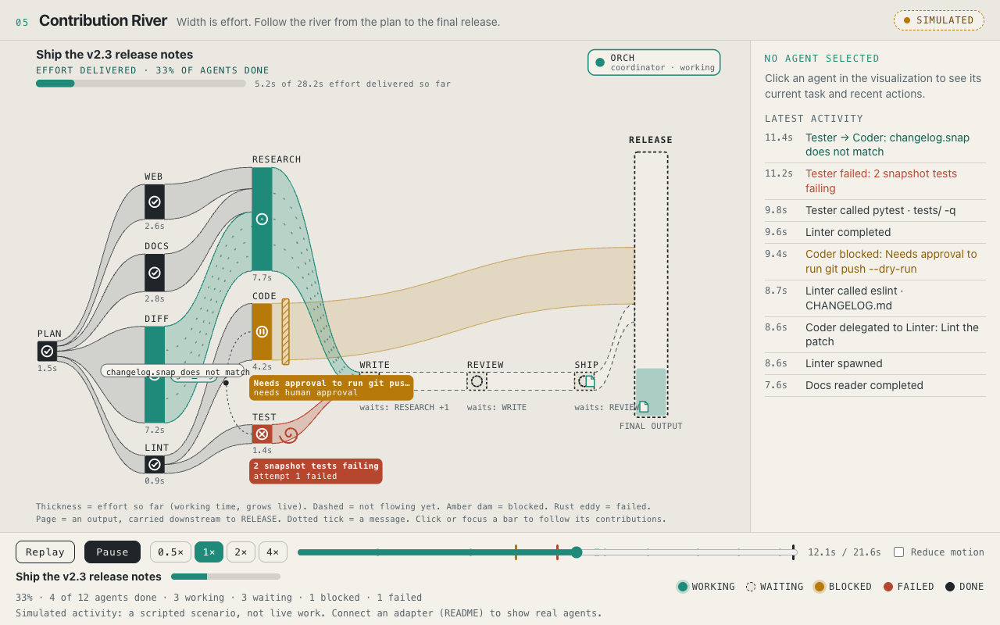
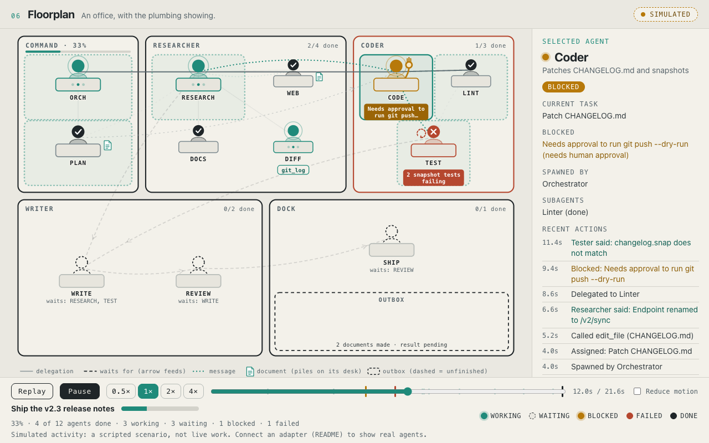
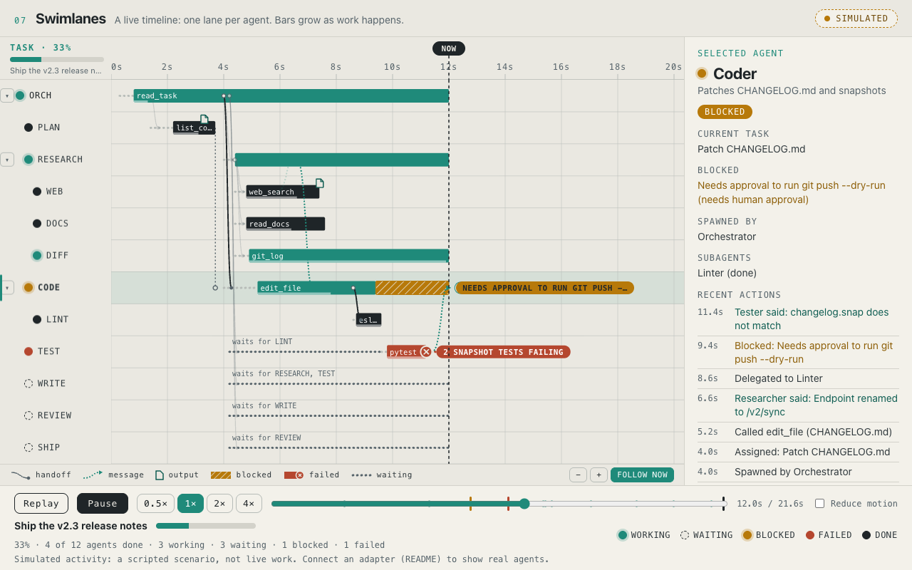
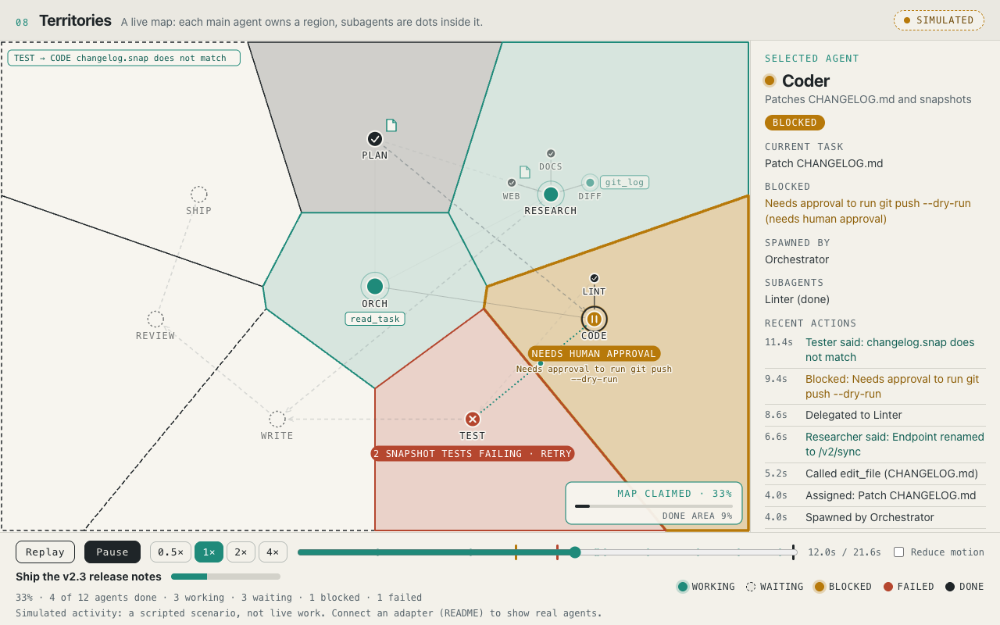
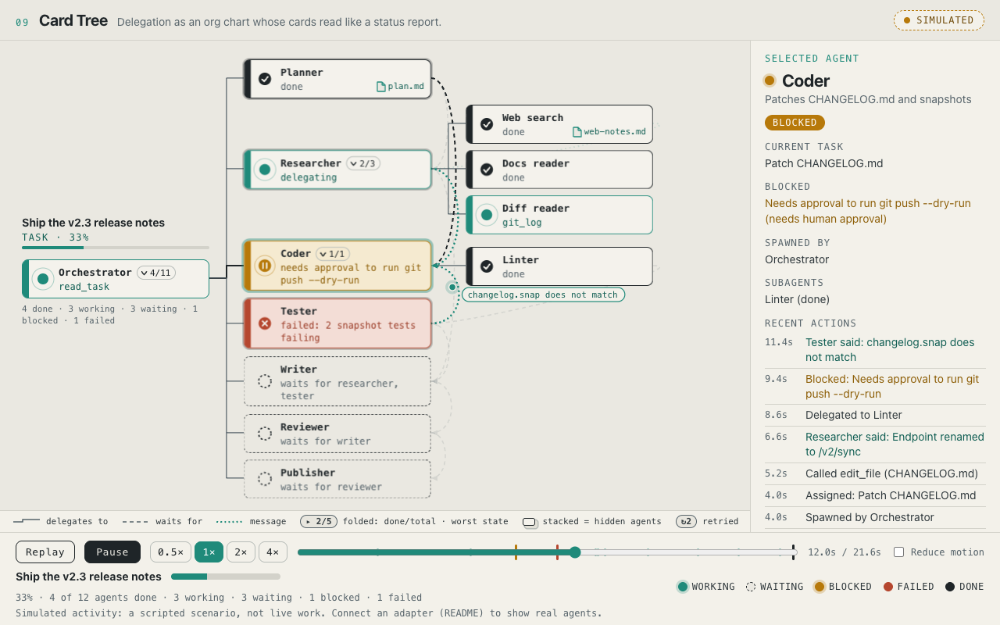
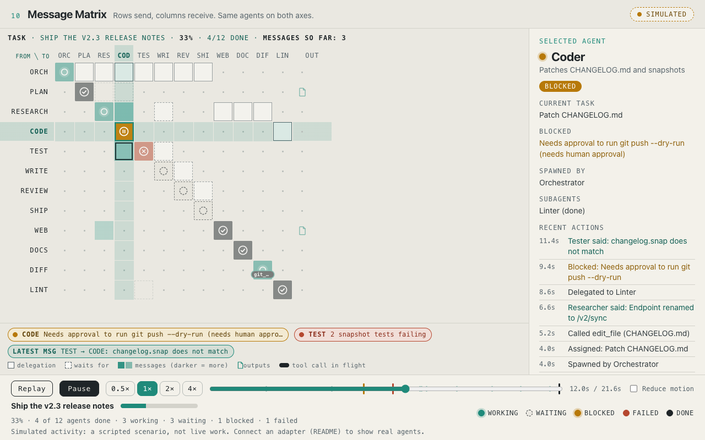

Design archive
SIMULATED The ten visualization designs that were evaluated, kept for reference and development. The product is the main app, which uses the Card tree. These pages replay a scripted task and run no agents.
How the choice was made: docs/DESIGN-REVIEW.md. The shared event model and UI shell these designs use is in shared/.










Layer experiments (retired from the main interface)
Two experiments that merged the designs: all ten as one picture (a single radial map with a toggleable layer per design) and a live tile grid of the ten. They were an exploration, not the product.